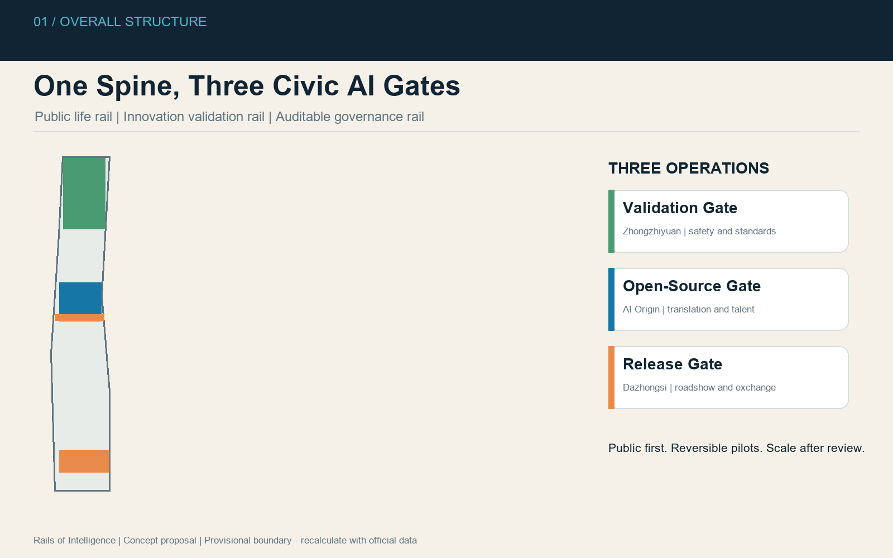
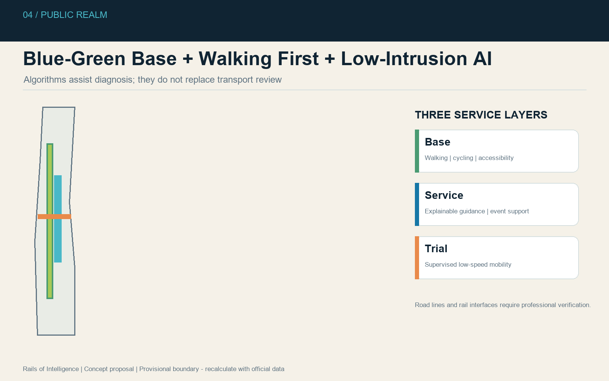
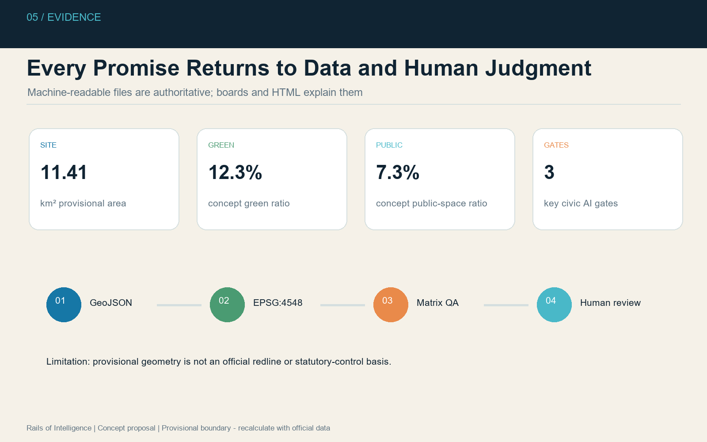

Public intelligence as urban infrastructure
The heritage corridor becomes a shared interface for daily life, open innovation, controlled testing, and public accountability.
Boundary status
Explicitly provisional. All derived geometry and metrics must be recalculated after official polygons are released.
PROVISIONAL SITE11.41 km²
GREEN RATIO12.3%
PUBLIC SPACE7.3%
KEY GATES3

Validation Gate
Zhongzhiyuan: model safety, standards governance, and low-carbon computing interpretation.
Open-Source Gate
AI Origin: release hall, university translation, developer commons, and talent services.
Release Gate
Dazhongsi: international roadshows, compliant data dialogue, and AI life demonstrations.


Review boundary
This is a conceptual open co-creation proposal. It does not constitute statutory planning, government approval, engineering feasibility, procurement, or investment commitment.